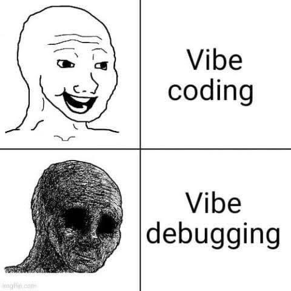
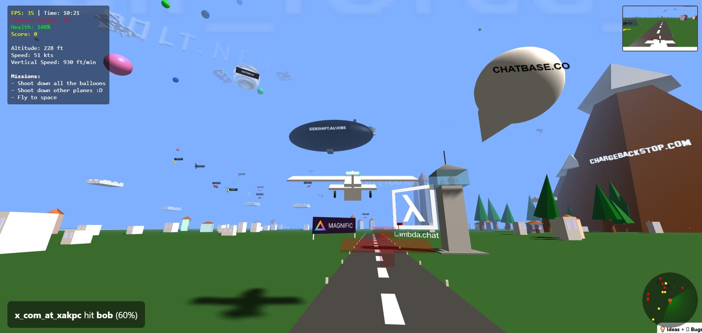
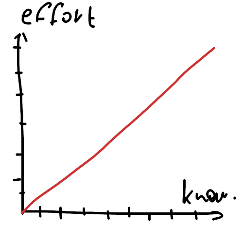
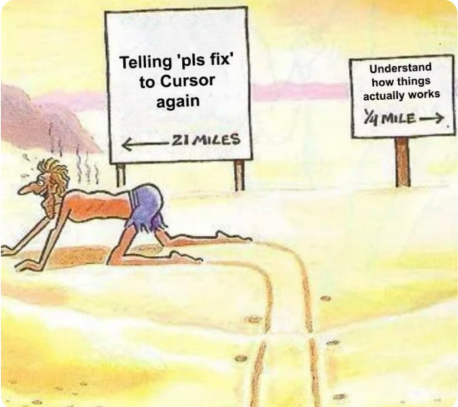

To predict what will have happened by the end of the 2025 year, I would like to start with the current state of the programming. The most hottest topic is Vibe Coding.
To put it briefly:
Vibe coding is an approach to programming without caring about the source code. Usually you need some sort of programs to deliver continual input from developer by voice or typing, and LLM receives that input and fills source files.
In the following notes I want to predict what will happened in the near future.
LLM's already showed us that they can produce prototypes blazingly fast. I believe that this property of the modern LLM's will be improved in the near future.
Startups will start using it to perform MVP (Minimal Value Product) to fill empty areas.
Modern tools with tight LLM's integration have produced programmers that do not know how things work.
"Thinking is pain"From the first look that case might seem a counterintuitive. By following the golden rule of automatization: "If something can be automated it must be automated". But it does not work in all cases.
Correlation of efforts made and knowledge gained:
You can imagine how many things you learned in school if you got all answers instantly.
By the end of the year we can see a lot of engineers that got a burnout because 99% of their work will look like an infinite cycle of prompting, approving all changes that LLM made and hoping that in this time it fixes the problem.
